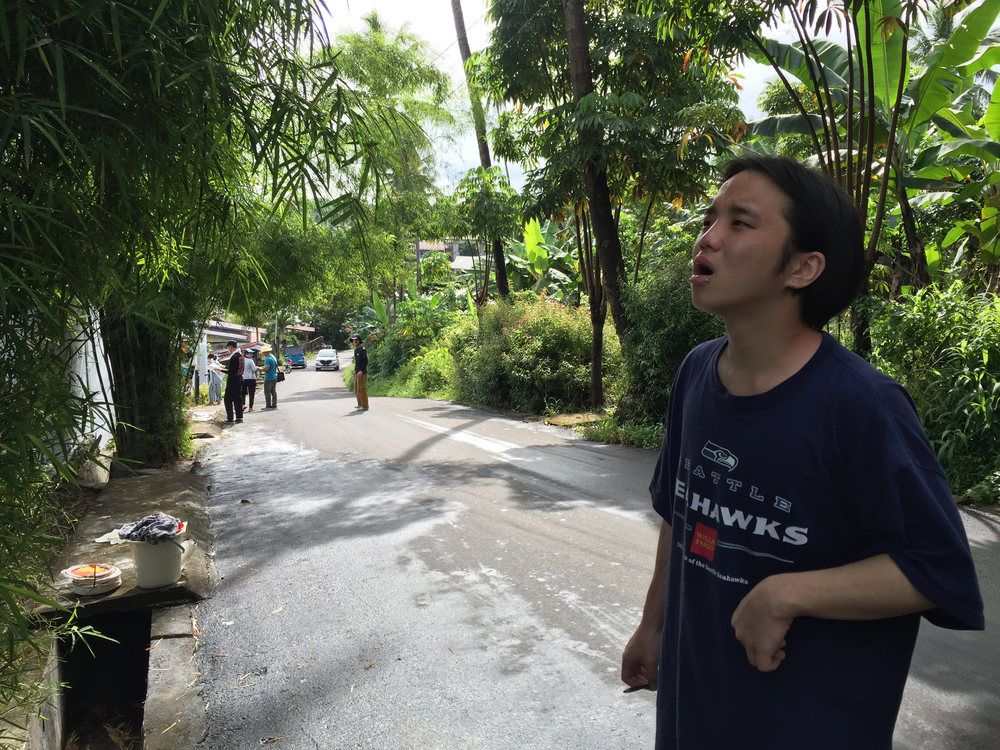

성큼 다가온 봄…
안성 냉이 축제
[앵커]
쌀쌀했던 어제와는 달리 오늘은 낮 기온이 크게 오르면서 제법 봄기운을 느낄 수가 있는데요.
경기도 안성에서는 대표 봄나물 냉이 축제가 한창이라고 합니다.
현장에 나가있는 뉴스 캐스터 연결해보죠.
박하윤 캐스터.
[캐스터]
삼월의 첫 주말입니다.
오늘 하늘도 맑고 날도 포근해서 나들이 즐기기 딱 좋은데요.
제가 나와있는 경기도 안성의 체험목장에서는 봄맞이 냉이 축제가 열리고 있습니다.
많은 시민들이 나와주셨는데요.
먼저 인터뷰 나눠보도록 하겠습니다.
<인터뷰 : 홍준기·홍주표 / 경기도 평택시>
<질문 1> 오늘 어떻게 이곳에 오시게 되셨나요?
<질문 2> 이렇게 오셔서 냉이도 캐고 또 봄도 즐겨보시니까 기분이 어떠신가요?
드넓은 목장 길을 따라 널린 냉이가 봄이 왔음을 실감하게 해주는데요.
추웠던 겨울이 가고 맞이하는 이른 봄 풍경에 사람들의 발길이 끊이질 않습니다.
이번 축제에서는 참가자들이 냉이를 직접 캘 수 있을 뿐만 아니라 자신이 캔 냉이를 가져갈 수 있는데요.
시민들은 한 손에 호미를 쥐고 냉이를 캐며 성큼 다가온 봄을 만끽하고 있습니다.
오늘은 주말을 맞아 특별한 이벤트도 진행된다고 하는데요.
바로 가장 긴 냉이 뿌리를 찾는 ‘냉이 왕 선발대회’인데요.

우승자는 냉이와 함께 푸짐한 상품도 가져갈 수 있습니다.
이곳에선 또, 냉이로 다양한 음식을 맛볼 수 있는 시식회도 열리고 있습니다.
향긋한 봄 내음을 입안 가득 맛보고 있는 시민들은 표정도 행복해 보이기만 합니다.
이밖에도, 가축 먹이주기와 승마 등 온 가족이 즐길 수 있는 다양한 체험행사도 준비돼 있습니다.
축제는 오는 25일까지 진행된다고 하니까요.
이번 주말 가족과 함께 이곳에 오셔 냉이도 캐고 즐거운 추억 만들어보시면 어떨까요?
지금까지 안성 냉이축제에서 연합뉴스TV 박하윤입니다.
<연합뉴스TV : 02-398-4441(기사문의·제보) 카톡/라인 jebo23